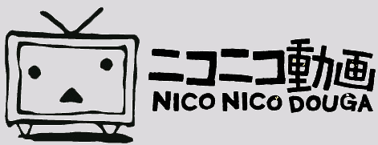

"Gachimuchi" is derived from two Japanese terms: "gacchiri" (がっちり, "muscular", "athletic"), and "muchimuchi" (ムチムチ; "chubby", "throbbing").
In Japanese sources, "Wrestling (Series)" (レスリング （シリーズ）) is used more often.
On September 30th, 2007, a video clip from Billy Herrington's video, "Workout Muscular Men 3", was uploaded to Nico Nico Douga as a bait-and-switch video, as "Professional-Pants Wrestling" (本格的 ガチムチパンツレスリング, Honkaku-teki Gachimuchi Pantsu Resuringu). It nonetheless gained more than 5.5 million views in less than five years, and spawned many musical remixes and comedic edited videos involving him and other characters, under various tags, such as "Gachimuchi Pants Wrestling" (ガチムチ パンツ レスリング), or simply "Wrestling (Series)" (レスリング （シリーズ）-- the tag most-often used by its Japanese fandom), "Forest Fairy" (森の妖精, Mori no Yousei) and "Philosophy" (哲学, Tetsugaku -- commonly used by Chinese fanbase). One of the more complex video-editing memes on the site, the footage was remixed in many different ways, including phonetic translation, sampling the sound of butt spanking, as well as remixes featuring 3D model characters and fanart of the actors. As of June 2012, there are more than 11,000 videos tagged under the label on Nico Nico Douga.
Nonetheless, it became popular in the United States (where its source videos originated), due to local audiences being amused by the sources and their characters depicted in bizarre ways. Ever since, it has gained audiences outside Japan, in other countries such as Taiwan, China, Russia, Poland, and Ukraine -- whereas its Inmu rivals have been relegated to Nico Nico Douga and Japan due to a lack of interested foreign audiences.